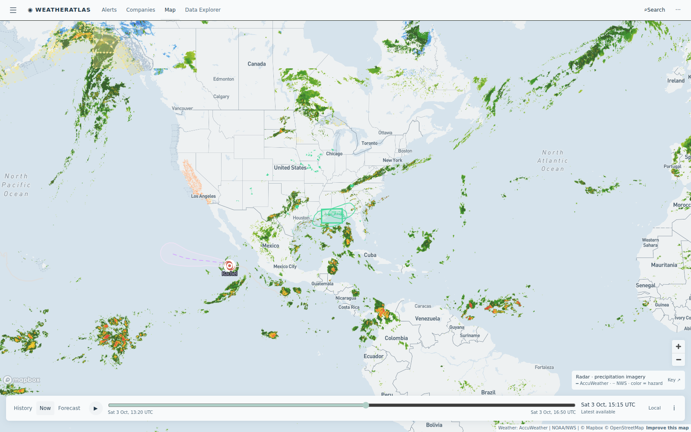

Daily severe-weather intelligence for LNG, refining, offshore, and terminal operators.

Live radar + active alert board from the AccuWeather-powered Atlas — captured 15:16 UTC today.
| System / region | Status | Energy-asset impact |
|---|---|---|
| Gulf Coast flash-flood corridor (South Texas → Louisiana) | ACTIVE DAY 2 | Flash-flood flags and Flood Warnings persist on producing fields and the Lake Charles chemical belt; Port Fourchon terminal hub sees 90%-probability thunderstorm windows this evening — dock transfers and crew rounds need re-sequencing around lightning standdowns |
| East Pacific: Hurricane Nolo (Cat 1) · Rachel (weakening) | OPEN WATER | Both offshore of Baja — no US energy-coast threat; elevated seas on Mexico West-Coast shipping lanes only; no Gulf/Atlantic development expected through 7 days per NHC |
| Southern California heat event | EASING | Final hours of Extreme Heat Warning over LA-basin refining (El Segundo → Carson); cooling arrives overnight — worker-exposure limits relax by Sunday shifts |
| Alaska: Cook Inlet gale | MINOR | Gale Warning continues in Cook Inlet — production platform and vessel ops scrub windows through the weekend |
Tonight at Port Fourchon — the Louisiana terminal hub where Gulf crew boats, pipelines and LNG projects converge — the two feeds split wide: AccuWeather carries thunderstorm probabilities at 90% for the 5–9 PM window with a second pulse before midnight, while the free feed tops out near 50% and labels most hours "cloudy." The per-asset briefs below embed the same-hour comparison, refreshed daily:
AccuWeather flags 90% thunderstorm windows this evening while the free feed shows mostly cloudy — lightning standdowns are the story for dock and crew-boat scheduling.
View live brief →Flood Warnings and coastal flood advisories hold on the Calcasieu chemical/LNG corridor for a second day — watch berth scheduling and tank-farm runoff.
View live brief →Heat event eases after today — final afternoon of peak cooling-water load and exposure limits before the weekend cool-down.
View live brief →